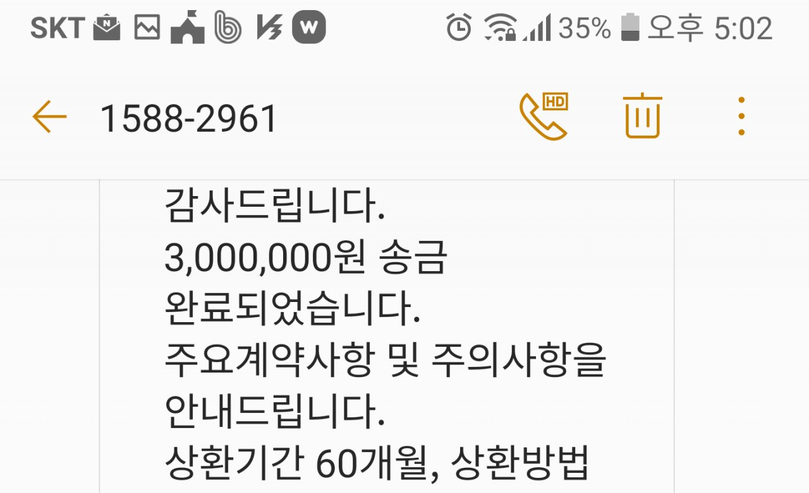

[개인회생자대출] 주부대출,,
양쯔
기존대출:개인회생으로없음
자격:주부대출
금액: 300씩 총600대출
모바일로계약서작성하고
통화후바로 입금받았네요 같은날요
저는 3월에 법원에서회생인가를 받고 뱅크앤론
담당자님을 지인에게추천받아서 대출을신청했어요 카톡으로 친절히 상담해주시고,부족한부분은 전화로도 친절상담해주셔서 300만원씩 총600만원을 대출받았어요 급한때에 요긴하게 사용했습니다 성실상환후 이자낮을걸로 추천해주신다더라고요감사합니다
